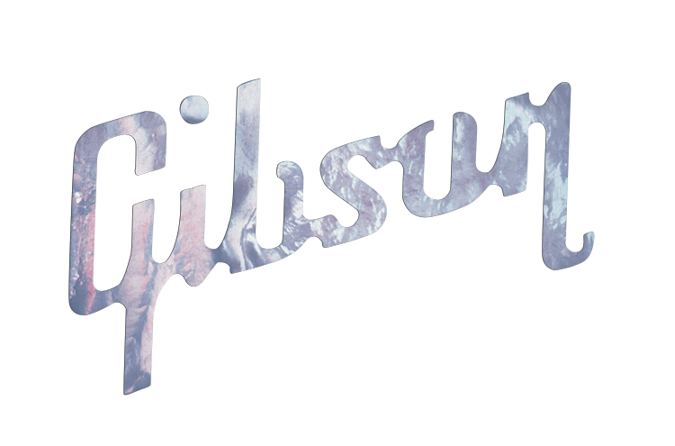

The Guitar Initiative
guitars generously donated by
The Guitar Initiative
The Guitar Initiative is a campaign to increase awareness and support for Nelson Mandela’s Legacy of Hope, through the medium of music. The Initiative has two main goals: to obtain musician and celebrity endorsements, and to produce ongoing recordings by artists to benefit the Children’s Hospital and its young patients. This campaign is supported by Gibson and managed by veteran music producer and executive producer of Legacy of Hope Concerts, Eric Gast.
In the first phase of the Guitar Initiative, musicians and celebrities worldwide are signing guitars and pledging their support for Nelson Mandela’s vision of free and accessible healthcare for children all over the world. It has included, so far, artists such as The Crystal Method, members of the Grateful Dead, Steve Jones (Sex Pistols), Guns N Roses, members of Bob Marley’s Wailers, Blues Traveler, Allman Brothers, Fishbone, Parliament Funkadellic, Robbie Robertson, Andy Frasier (Free), Nine Inch Nails, The Roots, Depeche Mode and Joseph Arthur.
At the end of the campaign, these signed guitars will be displayed on the walls of the Nelson Mandela Children’s Hospital, commemorating the significant role music and art played in building this historical state-of-the-art pediatric hospital. Selected guitars will be offered to the public during the upcoming Legacy of Hope fundraising campaigns.
The Guitar Initiative also encompasses the larger vision of building a recording facility in the Children’s Hospital, where the recovering children will learn and practice skills related to music production. The children will learn to produce live performances given by visiting international musicians, as part of their recovery program, practical education, and to support the ongoing work of the hospital.
The hospital recording facility is a radical concept that supports a wide range of goals: patient recovery, necessary skill training, and fundraising efforts that are required maintain a state-of-the-art hospital serving children from all socio-economic backgrounds. This ground-breaking Initiative is intended to be a template for future hospitals serving children around the world.
"Achieving this through the beauty of music
and art is what Legacy of Hope is all about."
— Eric Gast, Executive Producer, Legacy of Hope Concerts
The Guitar Initiative
Bands and celebrities are signing guitars worldwide for the Legacy of Hope campaign. By lending their signatures to these instruments, they are pledging their support of Mr. Mandela’s values and commitment for free and accessible healthcare for the children of Africa. They’re also committing the use of their social media in support with messaging, textcode and the connected digital campaigns that support’s the Legacy of Hope campaign.
guitars generously donated by
Signing of the guitars have included musical artists such as The Crystal Method, members of the Grateful Dead, Steve Jones (Sex Pistols), Guns N Roses, members of Bob Marley’s Wailers, Blues Traveler, Allman Brothers, Fishbone, Parliament Funkadellic, Robbie Robertson, Andy Frasier(Free), Nine Inch Nails, The Roots, Depeche Mode and Joseph Arthur.
At the end of this campaign, these guitars will go up on the walls of the Nelson Mandela Children’s Hospital commemorating music and art’s significant role in building this historical state-of-the-art hospital.
There are plans to build a recording facility for the children to learn and run as part of the healing process while producing a live streamed branded feed of top talent shows for global distribution.
"Achieving this through the
beauty of music and art
is what Legacy of Hope is all about."
The Guitar Initiative
Bands and celebrities are signing guitars worldwide for the Legacy of Hope campaign. By lending their signatures to these instruments, they are pledging their support of Mr. Mandela’s values and commitment for free and accessible healthcare for the children of Africa. They’re also committing the use of their social media in support with messaging, textcode and the connected digital campaigns that support’s the Legacy of Hope campaign.
guitars generously donated by
Signing of the guitars have included musical artists such as The Crystal Method,members of the Grateful Dead, Steve Jones (Sex Pistols), Guns N Roses, members of Bob Marley’s Wailers, Blues Traveler, Allman Brothers, Fishbone, Parliament Funkadellic, Robbie Robertson, Andy Frasier(Free), Nine Inch Nails, The Roots, Depeche Mode and Joseph Arthur.
At the end of this campaign, these guitars will go up on the walls of the Nelson Mandela Children’s Hospital commemorating music and art’s significant role in building this historical state-of-the-art hospital.
There are plans to build a recording facility for the children to learn and run as part of the healing process while producing a live streamed branded feed of top talent shows for global distribution.
"Achieving this through the
beauty of music and art
is what Legacy of Hope is all about."